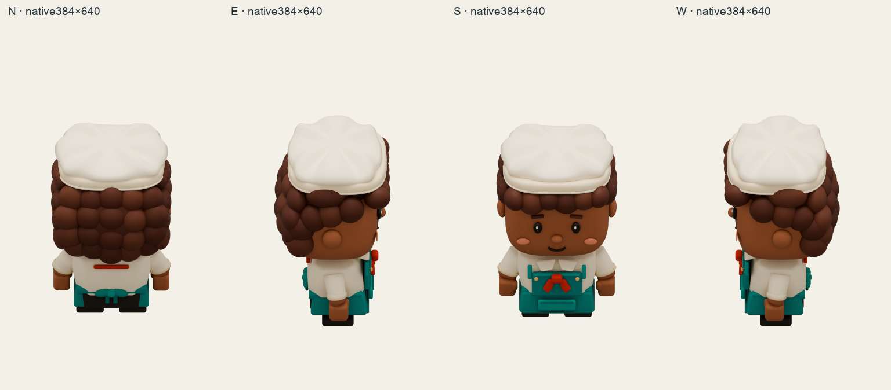
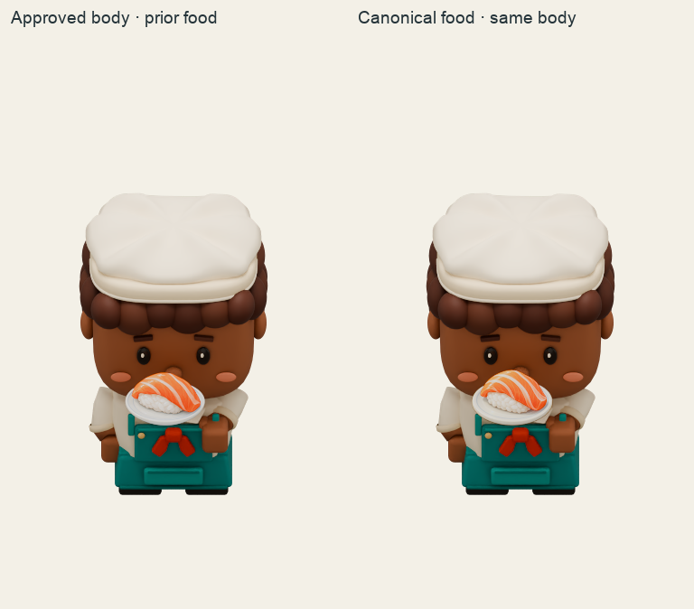

Dalia · canonical held food · round02 Exact approved native body, rig, materials, lights, camera and timing. The packed salmon image and fullUV/aspect quad use the frozen alpha128 support mapping and one unchanged source depth0.6. Each runtime clip retains12 indexed frames at12fps. Idle/work/hold loop; load returns holding and stops.
Play all from frame00 Pause all idle-N ·12fps ·loop idle-E ·12fps ·loop idle-S ·12fps ·loop idle-W ·12fps ·loop work-N ·12fps ·loop work-E ·12fps ·loop work-S ·12fps ·loop work-W ·12fps ·loop hold-N ·12fps ·loop hold-E ·12fps ·loop hold-S ·12fps ·loop hold-W ·12fps ·loop load-N ·12fps ·nonloop load-E ·12fps ·nonloop load-S ·12fps ·nonloop load-W ·12fps ·nonloop Registered source and canonical serving contexts Original128px cell pitch; the source load extends and returns holding. No new release or belt flight.
source load N candidate load N source load E candidate load E source load S candidate load S source load W candidate load W
Four native views and exact-registration comparison 

All native frames at logical and enlarged size on light/gray/dark idle-N-light-logical · idle-N-light-enlarged · idle-N-gray-logical · idle-N-gray-enlarged · idle-N-dark-logical · idle-N-dark-enlarged · idle-E-light-logical · idle-E-light-enlarged · idle-E-gray-logical · idle-E-gray-enlarged · idle-E-dark-logical · idle-E-dark-enlarged · idle-S-light-logical · idle-S-light-enlarged · idle-S-gray-logical · idle-S-gray-enlarged · idle-S-dark-logical · idle-S-dark-enlarged · idle-W-light-logical · idle-W-light-enlarged · idle-W-gray-logical · idle-W-gray-enlarged · idle-W-dark-logical · idle-W-dark-enlarged · work-N-light-logical · work-N-light-enlarged · work-N-gray-logical · work-N-gray-enlarged · work-N-dark-logical · work-N-dark-enlarged · work-E-light-logical · work-E-light-enlarged · work-E-gray-logical · work-E-gray-enlarged · work-E-dark-logical · work-E-dark-enlarged · work-S-light-logical · work-S-light-enlarged · work-S-gray-logical · work-S-gray-enlarged · work-S-dark-logical · work-S-dark-enlarged · work-W-light-logical · work-W-light-enlarged · work-W-gray-logical · work-W-gray-enlarged · work-W-dark-logical · work-W-dark-enlarged · hold-N-light-logical · hold-N-light-enlarged · hold-N-gray-logical · hold-N-gray-enlarged · hold-N-dark-logical · hold-N-dark-enlarged · hold-E-light-logical · hold-E-light-enlarged · hold-E-gray-logical · hold-E-gray-enlarged · hold-E-dark-logical · hold-E-dark-enlarged · hold-S-light-logical · hold-S-light-enlarged · hold-S-gray-logical · hold-S-gray-enlarged · hold-S-dark-logical · hold-S-dark-enlarged · hold-W-light-logical · hold-W-light-enlarged · hold-W-gray-logical · hold-W-gray-enlarged · hold-W-dark-logical · hold-W-dark-enlarged · load-N-light-logical · load-N-light-enlarged · load-N-gray-logical · load-N-gray-enlarged · load-N-dark-logical · load-N-dark-enlarged · load-E-light-logical · load-E-light-enlarged · load-E-gray-logical · load-E-gray-enlarged · load-E-dark-logical · load-E-dark-enlarged · load-S-light-logical · load-S-light-enlarged · load-S-gray-logical · load-S-gray-enlarged · load-S-dark-logical · load-S-dark-enlarged · load-W-light-logical · load-W-light-enlarged · load-W-gray-logical · load-W-gray-enlarged · load-W-dark-logical · load-W-dark-enlarged · Registered work/hold/load and phone contexts work-N-registered-context · work-N-phone-context · work-E-registered-context · work-E-phone-context · work-S-registered-context · work-S-phone-context · work-W-registered-context · work-W-phone-context · hold-N-registered-context · hold-N-phone-context · hold-E-registered-context · hold-E-phone-context · hold-S-registered-context · hold-S-phone-context · hold-W-registered-context · hold-W-phone-context · load-N-registered-context · load-N-phone-context · load-E-registered-context · load-E-phone-context · load-S-registered-context · load-S-phone-context · load-W-registered-context · load-W-phone-context · hold-S-000-radiance-controls · hold-E-000-radiance-controls · hold-N-000-radiance-controls · hold-W-000-radiance-controls · load-S-005-radiance-controls · work-S-005-radiance-controls ·